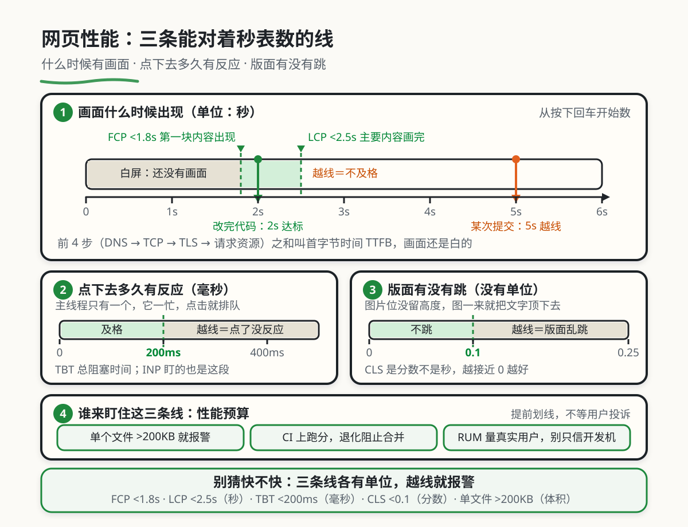

网页性能的度量与优化
本章目录 · 1 节
交互入口：本章模拟器位于原课程页面，需联网打开。书中保留原理、代码与操作说明；按代码在本地练习时，先建独立的练习目录。
网页性能优化原理
核心问题 为什么你的网页加载很慢，用户还在疯狂抱怨卡顿？ 这就像是问：为什么餐厅上菜慢、顾客等得不耐烦？本章将带你深入理解前端性能优化的核心概念，让你的网页"飞"起来。
1. 性能优化的动机
1.1 从能用到好用：性能优化的演变
十年前的网页非常简单，一个页面可能就几 KB，加载速度几乎感觉不到延迟。那时的我们根本不需要考虑性能优化——因为问题还没出现。
但现在完全不同了。现代网页的复杂度呈指数级增长：一个电商首页可能有几十张高清图片，一个社交平台可能同时加载上千条动态，一个管理后台可能包含几十个交互组件。这些"丰富"的功能背后，是庞大的代码量和资源体积，如果不好好优化，用户体验就会一塌糊涂。
👴 十年前的网页
- 单个页面只有几 KB 到几十 KB
- 只有文字和少量图片
- 用户几乎感觉不到加载延迟
- 不需要任何性能优化
现代的网页
- 单个页面可能几 MB 甚至更大
- 有高清图片、视频、交互组件
- 加载慢、滚动卡、点击反应迟钝
- 必须做性能优化才能用
这就是"性能优化"要解决的问题：让用户等待的时间更短，让操作更流畅。
1.2 案例：了解性能优化
你可能会说："现在的网络这么快，设备这么好，还需要考虑性能优化吗？" 让我讲一个真实的故事，你就会明白为什么这些知识如此重要。
小王的性能踩坑记 小王是一个刚入职的前端工程师，负责开发公司的电商首页。他用了最新的 Vue 3、最流行的 UI 库，功能做得非常完善，自己在公司的高性能电脑上测试时一切正常。
但上线后第二天，客服部门就炸锅了——大量用户投诉说"网站太卡了"、"图片加载不出来"、"点击按钮半天没反应"。小王打开自己的开发机测试，一切都很流畅啊，他完全不理解问题出在哪里。
后来请师傅帮忙定位，师傅让他用一台普通的笔记本电脑，连上普通的 4G 网络，然后再测试自己的网站。小王这才傻眼了：首页加载要等十几秒，滚动列表时卡得像 PPT，点击按钮后要等好几秒才有反应。
原来小王的开发环境是顶配的 MacBook Pro + 千兆光纤，而大多数用户用的是普通设备 + 移动网络。他写的代码里有几十张未压缩的高清图片，引入了整个 UI 库但只用了几个组件，还在渲染时做了大量同步计算。
解决方案其实不复杂：压缩图片、按需引入组件、把计算放到后台线程、使用虚拟列表。这样改动之后，首页加载时间从十几秒变成了 2 秒，滚动也非常流畅，用户投诉立刻消失了。
小王从此明白了一个道理：不了解性能优化，你写出来的代码在自己电脑上跑得飞快，但在用户设备上可能根本没法用。
核心启示 性能优化是必备技能。你要站在用户的视角思考问题——他们用的是普通设备、普通网络，如果你的代码在他们设备上跑不动，那就说明你需要优化了。
2. 核心概念：加载、渲染、交互
🤔 这些概念和性能有什么关系？ 加载、渲染、交互就是用户访问网页的三个核心环节，每个环节都可能成为性能瓶颈。
当用户访问你的网页时，会依次经历：
- 加载 → 把 HTML/CSS/JS/图片 从服务器下载到浏览器
- 渲染 → 把下载的内容"画"成用户能看到的页面
- 交互 → 响应用户的点击、滚动等操作
所以，性能优化就是让这三个环节都快起来。理解它们，你才能知道性能瓶颈出在哪里，该用什么方法优化。
在深入学习具体优化技巧之前，我们需要先搞清楚这几个核心概念。为了帮助你更好地理解，我们用餐厅的比喻来类比它们之间的关系。
2.1 用餐厅比喻理解三个环节
想象你去一家餐厅吃饭，这个过程和访问网页惊人地相似：
| 环节 | 🍽️ 餐厅比喻 | 实际作用 | 具体例子 |
|---|---|---|---|
| 加载 | 把食材从仓库运送到厨房 | 把 HTML/CSS/JS/图片 从服务器下载到浏览器 | 用户打开网页，浏览器开始下载各种资源 |
| 渲染 | 厨师把食材加工成菜肴 | 浏览器把代码转换成用户能看到的页面 | 浏览器解析 HTML、计算布局、绘制页面 |
| 交互 | 服务员响应顾客的需求 | 浏览器响应点击、滚动等操作 | 用户点击按钮，页面做出反馈 |
2.2 加载（Loading）：食材运送
加载是指把网页所需的各种资源（HTML、CSS、JavaScript、图片、字体等）从服务器下载到浏览器的过程。这个过程就像把食材从仓库运送到厨房，如果运送慢或者食材太多，厨房就得干等着。
为什么加载会慢？ 主要有三个原因：首先，资源体积太大——一张未压缩的高清图片可能就有 5MB，相当于下载一本小说；其次，网络延迟——如果服务器在国外，或者用户用移动网络，每个请求都要等很久；最后，请求太多——浏览器同时下载的资源数量有限，太多资源就要排队。
🔍 看看加载阶段都做了什么 当用户在浏览器地址栏输入网址并按下回车后，会依次发生：
- DNS 解析：把域名（如
www.example.com）转换成 IP 地址（如192.168.1.1），就像通过电话簿查找餐厅地址 - TCP 连接：浏览器和服务器建立连接，就像打电话前要先拨号
- TLS 握手：建立安全连接（HTTPS），就像确认对方身份
- 请求资源：浏览器向服务器请求 HTML 文件
- 解析 HTML：浏览器解析 HTML，发现需要 CSS、JS、图片等资源，继续请求
- 下载资源：把所有需要的资源下载到本地
- 开始渲染：下载完成后，开始渲染页面
前面的 1-4 步叫"首字节时间"（TTFB），后面的 5-7 步是真正的资源下载时间。
常见的加载优化手段：
- 压缩资源：把文件变小（Gzip、Brotli 压缩）
- 使用 CDN：把文件存在离用户更近的服务器上
- 懒加载：只加载用户看得到的内容，剩下的等用户滚动时再加载
- 代码分割：把大文件拆成小文件，按需加载
2.3 渲染（Rendering）：厨师做菜
渲染是指浏览器把下载的 HTML、CSS、JavaScript 转换成用户能看到的页面的过程。这个过程就像厨师把食材加工成菜肴，如果工序复杂、步骤多，上菜就会慢。
📖 什么是"渲染"？ 你可能听说过"渲染"这个词，它到底是什么？
简单来说，渲染就是把代码变成画面的过程。
浏览器要做的事情包括：
- 解析 HTML → 生成 DOM 树（页面的结构）
- 解析 CSS → 生成 CSSOM 树（页面的样式）
- 合并 → 生成渲染树（结构和样式的结合）
- 布局 → 计算每个元素的位置和大小
- 绘制 → 把元素画出来
- 合成 → 把多个图层合并成最终画面
这个过程非常复杂，任何一个环节出问题，都会导致页面卡顿。
为什么渲染会慢？ 主要有两个原因：首先，页面太复杂——如果一个页面有上万个 DOM 节点，浏览器计算布局和绘制就会非常耗时；其次，频繁修改页面——如果 JavaScript 代码频繁修改 DOM，会导致浏览器反复重新布局和绘制，消耗大量性能。
📁 看看渲染阶段都做了什么 渲染的完整流程：
HTML (字符串)
↓
[解析 HTML] → 生成 DOM 树
↓
DOM 树 (页面结构)
CSS (样式表)
↓
[解析 CSS] → 生成 CSSOM 树
↓
CSSOM 树 (页面样式)
DOM 树 + CSSOM 树
↓
[合并] → 生成渲染树
↓
渲染树 (要渲染的元素)
↓
[布局 Layout] → 计算每个元素的位置和大小
↓
[绘制 Paint] → 填充颜色、绘制文字
↓
[合成 Composite] → 合并多个图层
↓
最终画面
关键渲染路径（Critical Rendering Path）：浏览器要尽快把第一屏内容渲染出来，让用户觉得"网站很快"。这叫"关键渲染路径优化"。
👇 动手看看： 原课程的交互演示展示了浏览器是如何渲染页面的。点击"下一步"，观察渲染的各个阶段：
常见的渲染优化手段：
- 减少重排和重绘：避免频繁修改 DOM，使用
transform和opacity代替top和width - 虚拟列表：只渲染可见区域的内容，大量数据时性能提升明显
- CSS 动画：用 CSS 动画代替 JavaScript 动画，性能更好
2.4 交互（Interaction）：服务员响应
交互是指浏览器响应用户操作（点击、滚动、输入等）的过程。这个过程就像服务员响应顾客的需求，如果服务员忙不过来，顾客就得等。
为什么交互会卡？ 主要原因是主线程被阻塞了。浏览器的 JavaScript 是单线程的，如果代码在执行复杂的计算，就没法响应用户的操作，导致页面卡顿。
🤔 什么是"主线程"？ 浏览器有多个线程，但负责执行 JavaScript、渲染页面、响应用户操作的只有一个——主线程。
你可以把主线程想象成一个忙碌的服务员，他要做很多事情：
- 执行 JavaScript 代码（计算数据、调用 API）
- 渲染页面（布局、绘制）
- 响应用户操作（点击按钮、滚动页面）
问题来了：他只有一个人。如果他在执行复杂的 JavaScript 计算（比如处理一万条数据），这时候用户点击了按钮，他是没法立即响应的，必须等计算完才行。这就是卡顿的根源。
解决方案：
- 把复杂的计算放到 Web Worker（后台线程）
- 使用时间切片，把大任务拆成小任务
- 避免同步的复杂操作，改用异步
👇 动手试试看： 原课程的交互演示对比了同步计算和 Web Worker 的区别。点击"开始计算"，观察页面是否卡顿：
常见的交互优化手段：
- 防抖和节流：限制事件的触发频率（比如滚动事件、输入事件）
- Web Worker：把复杂计算放到后台线程，不阻塞主线程
- 时间切片：把大任务拆成小任务，让浏览器有机会响应用户操作
3. 实战：一个团队的性能优化演进之路
讲了这么多概念，我们看一个真实的案例：某创业公司是如何从"完全没考虑性能"一步步进化到"系统化性能优化"的。通过这个案例，你会更直观地理解性能优化到底解决了什么问题。
3.1 演进的全景图
下面这张表展示了性能优化的四个阶段，你可以看到优化手段、工具、指标是如何一步步进化的：
| 阶段 | 优化手段 | 监控工具 | 核心指标 | 核心变化 |
|---|---|---|---|---|
| 阶段一：原始时代 | 无（没考虑） | 无（凭感觉） | 无 | 完全没性能意识，能跑就行 |
| 阶段二：手动优化 | 压缩图片、减少请求 | 浏览器 Network 面板 | 页面加载时间 | 开始有意识，但方法原始 |
| 阶段三：系统化优化 | 代码分割、懒加载、虚拟列表 | Lighthouse、Performance 面板 | FCP、LCP、TBT | 用专业工具，有明确的优化目标 |
| 阶段四：持续优化 | 性能预算、CI/CD 检查 | RUM、Lighthouse CI | INP、CLS、全链路监控 | 把性能纳入开发流程 |
从表格中你能看到什么？ 我们逐行解读这张表：
阶段一 → 阶段二：从"没意识"到"有意识"。这是关键的一步——开发者开始意识到性能是个问题，并且尝试优化。但优化手段比较原始，主要靠感觉和经验。
阶段二 → 阶段三：从"手动"到"系统化"。这是质的飞跃——开始使用专业工具（Lighthouse、Performance 面板）来诊断性能问题，用科学的方法（代码分割、懒加载）来优化，而不是凭感觉。
阶段三 → 阶段四：从"一次性优化"到"持续优化"。当性能优化成为开发流程的一部分后，就需要建立监控体系（RUM、真实用户监控），在开发阶段就设置性能预算，防止退化。
总结一下：性能优化演进不只是"用了更多技术"，而是整个思维方式的升级——从被动响应到主动预防，从凭感觉到数据驱动，从单次优化到持续改进。
3.2 阶段一：原始时代——完全没考虑
为什么叫"原始时代"？因为这个阶段完全没考虑性能问题——能跑就行。团队只有 3 个人，做一个简单的企业官网，项目很小，看起来没什么问题。
但随着项目变大、用户增多，问题开始暴露出来。
开发方式：
- 优化手段：无，直接开发，没考虑性能
- 监控工具：无，凭感觉判断快慢
- 核心指标：无
这个阶段的特点：
- ✅ 优点：开发快，没有额外的学习成本
- ❌ 缺点：用户体验差，网速慢时根本没法用
查看当时的问题 遇到的具体问题：
- 图片太大：产品经理上传了一张 5MB 的首页 Banner 图，移动网络用户打开网页要等 1 分钟
- 没有压缩：CSS 和 JS 文件完全没有压缩，体积是压缩后的 3 倍
- 没有缓存：每次访问都要重新下载所有资源，老用户也要等
- 同步加载：所有 JS 文件都在
<head>中同步加载，阻塞页面渲染
用户的反馈：
- "你们网站怎么打不开？"
- "图片半天加载不出来，就是空白"
- "点击按钮没反应，是不是网站坏了？"
当时的临时解决方案：
<!-- 用 loading 遮罩"欺骗"用户 -->
<div id="loading">加载中...</div>
<script>
// 页面加载完成后才移除遮罩
window.onload = function() {
document.getElementById('loading').style.display = 'none'
}
</script>
这完全是在"自欺欺人"——页面还是很慢，只是用户看不到而已。
3.3 阶段二：手动优化——开始有意识
原始时代的问题积累到一定程度，团队终于决定开始做性能优化。这是一个重要的转折点——从"完全不考虑"到"有意识地优化"。
但这个阶段的优化比较原始，主要靠压缩图片、合并文件等简单手段。
开发方式：
- 优化手段：手动压缩图片、合并 CSS/JS 文件、减少 HTTP 请求
- 监控工具：浏览器 Network 面板、简单的计时日志
- 核心指标：页面加载时间（手动用秒表计时）
这个阶段的特点：
- ✅ 优点：有明显改善，用户不再疯狂投诉
- ❌ 缺点：优化不系统，容易反复，缺少量化指标
查看手动优化的具体做法 手动优化手段：
手动压缩图片：
- 用 Photoshop 把每张图片手动"另存为 Web 格式"
- 把 PNG 转 JPEG（有损压缩，但体积小很多）
- 缩小图片尺寸（比如 2000px 宽的图缩小到 800px）
手动合并文件：
<!-- 优化前：10 个 JS 文件 = 10 个请求 --> <script src="utils.js"></script> <script src="api.js"></script> <script src="component-a.js"></script> <script src="component-b.js"></script> ...（还有 6 个） <!-- 优化后：1 个合并的 JS 文件 = 1 个请求 --> <script src="all.js"></script>把 CSS/JS 移到页面底部：
<body> <!-- 页面内容 --> <h1>欢迎访问</h1> <!-- 优化：把 CSS/JS 放在最后 --> <link rel="stylesheet" href="style.css"> <script src="app.js"></script> </body>
带来的改善：
- 图片体积从 5MB 减小到 500KB（减少 90%）
- HTTP 请求数从 30 个减少到 5 个
- 页面加载时间从 30 秒减少到 8 秒
新的痛点：
- 手动工作量大：每次更新都要手动压缩图片、合并文件
- 容易忘记：新人不知道要优化，直接上传原图
- 缺少量化：只知道"快了一些"，但不知道具体快多少
3.4 阶段三：系统化优化——用工具与数据驱动优化
阶段二的问题（手动工作量大、缺少量化）困扰了团队很久。直到后来，团队发现了 Lighthouse、Performance 面板等专业工具，进入了系统化优化时代。
这个阶段的核心是用数据驱动优化——先用工具诊断问题，找到性能瓶颈，再有针对性地优化。
开发方式：
- 优化手段：代码分割、懒加载、虚拟列表、图片自动压缩
- 监控工具：Lighthouse、Chrome Performance 面板、WebPageTest
- 核心指标：FCP（首屏时间）、LCP（最大内容绘制）、TBT（总阻塞时间）
系统化优化的具体做法 使用 Lighthouse 诊断问题：
Lighthouse 是 Google 开发的自动化性能测试工具，可以给出全面的性能报告和优化建议。
# 使用 Lighthouse 测试网页
lighthouse https://www.example.com --view
Lighthouse 会给出：
- 性能评分（0-100 分）
- 核心指标（FCP、LCP、CLS、TBT、INP）
- 优化建议（比如"启用文本压缩"、"移除未使用的 JavaScript"）
关键指标解读：
| 指标 | 全称 | 含义 | 理想值 |
|---|---|---|---|
| FCP | First Contentful Paint | 首次内容绘制时间（用户看到第一块内容的时间） | <1.8s |
| LCP | Largest Contentful Paint | 最大内容绘制时间（主要内容加载完成的时间） | <2.5s |
| TBT | Total Blocking Time | 总阻塞时间（主线程被阻塞的总时间） | <200ms |
| CLS | Cumulative Layout Shift | 累积布局偏移（页面元素乱跳的程度） | <0.1 |

这个阶段的特点：
- ✅ 优点：优化有针对性，效果好，有量化指标
- ❌ 缺点：需要学习工具和指标，有一定门槛
查看系统化优化的具体技术 1. 代码分割（Code Splitting）：
把大文件拆成小文件，按需加载。比如用户访问首页时，只加载首页需要的代码，等到点击"关于我们"时，再去加载关于页面的代码。
// 优化前：所有代码都在一个文件，一次性加载
import About from './views/About.vue'
import Contact from './views/Contact.vue'
// ... 还有 10 个页面
// 优化后：懒加载，访问时才加载
const About = () => import('./views/About.vue')
const Contact = () => import('./views/Contact.vue')
效果：首页加载的代码量减少 70%，首屏时间从 5 秒降到 1.5 秒。
2. 图片懒加载（Lazy Loading）：
只加载用户看得到的图片，滚动到可视区域时再加载其他图片。
<!-- 现代浏览器支持原生的懒加载 -->
<img src="placeholder.jpg" data-src="real-image.jpg" loading="lazy" />
效果：首页加载的图片数量从 20 张减少到 3 张，节省 80% 的带宽。
3. 虚拟列表（Virtual Scrolling）：
如果要渲染 10,000 条数据，不要真的创建 10,000 个 DOM 节点，而是只渲染可见区域的 20 条，滚动时动态替换。
<!-- 使用 vue-virtual-scroller 组件 -->
<RecycleScroller
:items="items"
:item-size="50"
key-field="id"
>
<template #default="{ item }">
<div>{{ item.name }}</div>
</template>
</RecycleScroller>
效果：10,000 条数据从"卡死"变成"流畅滚动"，内存占用减少 95%。
3.5 阶段四：持续优化——把性能纳入开发流程
当工具和方法成熟后，团队开始关注更深层次的问题：如何防止性能退化？如何让性能成为开发流程的一部分？
这个阶段的核心是建立性能监控和预算体系——在开发阶段就预防性能问题。
开发方式：
- 优化手段：性能预算（Performance Budget）、Lighthouse CI、真实用户监控（RUM）
- 监控工具：Lighthouse CI、WebPageTest API、Google Analytics
- 核心指标：INP（交互延迟）、CLS（布局偏移）、全链路监控
持续优化的具体做法 1. 设置性能预算：
在打包配置中设置限制，超过就报错，防止"无意中引入大文件"。
// vite.config.js
export default defineConfig({
build: {
rollupOptions: {
output: {
// 限制单个文件不超过 200KB
chunkFileNames: 'js/[name]-[hash].js',
}
},
// 超过 200KB 时发出警告
chunkSizeWarningLimit: 200
}
})
2. Lighthouse CI：
每次提交代码时，自动运行 Lighthouse 测试，如果性能分数下降，就阻止合并。
# .github/workflows/lighthouse.yml
name: Lighthouse CI
on: [pull_request]
jobs:
lighthouse:
runs-on: ubuntu-latest
steps:
- uses: actions/checkout@v3
- name: Run Lighthouse CI
uses: treosh/lighthouse-ci-action@v9
with:
urls: |
https://staging.example.com
budgetPath: ./budget.json
3. 真实用户监控（RUM）：
在真实用户浏览器中收集性能数据，而不是只在开发环境测试。
// 发送性能数据到服务器
const perfData = performance.getEntriesByType('navigation')[0]
const lcp = performance.getEntriesByType('largest-contentful-paint')[0]
fetch('/api/perf', {
method: 'POST',
body: JSON.stringify({
fcp: perfData.loadEventEnd - perfData.fetchStart,
lcp: lcp.renderTime || lcp.loadTime,
url: window.location.href
})
})
效果：
- 能及时发现性能退化（比如某次提交导致 LCP 从 2 秒变成 5 秒）
- 能了解真实用户的体验（而不是开发环境的"理想状态"）
- 能针对性地优化最慢的那 10% 用户
这个阶段会做什么？
- 性能预算：限制文件大小、请求数量，超过就报警
- CI/CD 检查：每次提交代码自动测试性能，退化就阻止合并
- 真实用户监控：收集真实用户的性能数据，持续改进
- 定期性能报告：每周/每月生成性能报告，跟踪趋势
4. 常见性能瓶颈与解决方案
讲了这么多理论，我们看看实际开发中最常见的性能问题，以及如何解决。
4.1 图片加载慢
问题表现：图片半天加载不出来，或者加载过程中页面跳动。
原因：
- 图片体积太大（高清原图）
- 图片尺寸太大（2000px 宽的图显示为 200px）
- 没有懒加载（一次性加载所有图片）
解决方案：
- 使用现代图片格式（WebP、AVIF）：
<!-- 现代：WebP 格式，体积小 30-70% -->
<picture>
<source srcset="image.webp" type="image/webp">
<img src="image.jpg" alt="图片">
</picture>
- 响应式图片（根据设备大小加载不同尺寸）：
<!-- 小设备加载小图，大设备加载大图 -->
<img
src="image-800.jpg"
srcset="image-400.jpg 400w,
image-800.jpg 800w,
image-1200.jpg 1200w"
sizes="(max-width: 600px) 400px,
(max-width: 1200px) 800px,
1200px"
alt="响应式图片">
- 懒加载（用户滚动到时再加载）：
<!-- 现代：原生懒加载 -->
<img src="placeholder.jpg" data-src="real-image.jpg" loading="lazy" />
👇 动手试试看： 原课程的交互演示对比了懒加载和不懒加载的区别。观察网络请求：
4.2 首屏加载慢
问题表现：用户打开网页，白屏时间很长。
原因：
- 加载了太多不必要的代码
- 关键渲染路径被阻塞
- 没有做代码分割
解决方案：
- 代码分割（Code Splitting）：
// 路由懒加载：访问时才加载
const routes = [
{
path: '/about',
component: () => import('./views/About.vue') // 访问 /about 时才加载
}
]
- 预加载关键资源（Preload）：
<!-- 提前告知浏览器：这些资源很重要，优先加载 -->
<link rel="preload" href="critical.css" as="style">
<link rel="preload" href="hero-image.jpg" as="image">
- 内联关键 CSS：
<!-- 把首屏需要的 CSS 直接内嵌在 HTML 中 -->
<style>
/* 首屏关键样式 */
.hero { background: #000; color: #fff; }
</style>
4.3 滚动卡顿
问题表现：页面滚动时一卡一卡的，不流畅。
原因：
- 渲染了太多 DOM 节点（比如 10,000 条数据）
- 滚动事件监听器中有复杂计算
- 频繁触发布局计算
解决方案：
- 虚拟列表（Virtual Scrolling）：
<!-- 只渲染可见区域的内容 -->
<RecycleScroller
:items="10000"
:item-size="50"
>
<template #default="{ item }">
<div>{{ item.name }}</div>
</template>
</RecycleScroller>
👇 动手看看： 原课程的交互演示对比了普通列表和虚拟列表的性能差异：
- 节流滚动事件（Throttle）：
// 限制滚动事件的触发频率（最多每 100ms 触发一次）
const throttledScroll = throttle(() => {
updatePosition()
}, 100)
window.addEventListener('scroll', throttledScroll)
- 使用 CSS
will-change：
/* 提前告知浏览器：这个元素会变化，请做好准备 */
.scroll-container {
will-change: transform;
}
4.4 点击反应慢
问题表现：点击按钮后，要等好几秒才有反应。
原因：
- 点击事件处理器中有复杂计算（阻塞主线程）
- 没有使用防抖（用户快速点击多次，触发多次计算）
解决方案：
- 防抖点击事件（Debounce）：
// 用户停止点击 300ms 后才执行
const debouncedClick = debounce(() => {
submitForm()
}, 300)
button.addEventListener('click', debouncedClick)
- 使用 Web Worker（把计算放到后台线程）：
// 主线程
const worker = new Worker('calculator.js')
button.addEventListener('click', () => {
worker.postMessage({ data: largeData })
})
worker.onmessage = (e) => {
// 计算完成，显示结果
showResult(e.data.result)
}
// calculator.js (Worker 线程)
self.onmessage = (e) => {
const result = heavyCalculation(e.data.data)
self.postMessage({ result })
}
5. 性能监控工具
性能优化不是一次性工作，需要持续监控。下面介绍常用的工具。
5.1 浏览器开发者工具
Chrome DevTools 是最常用的性能分析工具：
- Network 面板：查看资源加载情况
- Performance 面板：分析运行时性能（FPS、主线程活动）
- Lighthouse：一键生成性能报告
如何使用 Performance 面板
- 打开 Chrome DevTools（F12）
- 切换到 Performance 面板
- 点击"Record"按钮
- 操作网页（滚动、点击等）
- 点击"Stop"停止录制
- 分析结果：看 FPS（帧率）、主线程活动、长任务等
5.2 Lighthouse
Lighthouse 是 Google 开发的自动化性能测试工具：
# 命令行使用
lighthouse https://www.example.com --view
# 或者在 Chrome DevTools 中使用
# 打开 DevTools → Lighthouse → 点击 "Analyze page load"
Lighthouse 会给出：
- 性能评分（0-100 分）
- 核心指标（FCP、LCP、CLS、TBT、INP）
- 优化建议（按影响排序）
5.3 WebPageTest
WebPageTest 是在线性能测试工具，可以从多个地点、多种设备测试：
# 访问 https://www.webpagetest.org
# 输入网址，选择测试地点和设备，点击 "Start Test"
WebPageTest 会给出：
- 瀑布图（Waterfall）：每个资源加载的时间线
- 视频对比：优化前后的加载过程视频
- 优化建议
6. 性能优化清单
下面是一个实用的性能优化清单，你可以按照这个顺序优化你的网页：
6.1 加载优化
- ✅ 压缩图片：使用 WebP 格式，压缩质量 80-85%
- ✅ 响应式图片：根据设备大小加载不同尺寸的图片
- ✅ 懒加载：图片和组件懒加载，只加载可见内容
- ✅ 代码分割：按路由分割代码，按需加载
- ✅ 压缩代码：启用 Gzip/Brotli 压缩
- ✅ 使用 CDN：把静态资源放到 CDN，加速下载
- ✅ 预加载关键资源：使用
<link rel="preload">
6.2 渲染优化
- ✅ 减少重排重绘：使用
transform和opacity代替top和width - ✅ 虚拟列表：大量数据时使用虚拟滚动
- ✅ CSS 动画：优先使用 CSS 动画，而不是 JavaScript 动画
- ✅ 优化关键渲染路径：内联关键 CSS，延迟加载非关键 CSS
- ✅ 避免 @import：
@import会阻塞渲染，改用<link>
6.3 交互优化
- ✅ 防抖和节流：滚动、输入、resize 事件使用防抖/节流
- ✅ Web Worker：复杂计算放到后台线程
- ✅ 时间切片：大任务拆成小任务，避免长任务
- ✅ 避免同步布局：不要在循环中读取布局属性（如
offsetHeight）
6.4 缓存优化
- ✅ HTTP 缓存：配置 Cache-Control 和 ETag
- ✅ Service Worker：缓存静态资源，实现离线访问
- ✅ LocalStorage：缓存 API 数据，减少请求
- ✅ 内存缓存：使用
Map/Object缓存计算结果
6.5 监控优化
- ✅ Lighthouse CI：每次提交代码自动测试性能
- ✅ 真实用户监控：收集真实用户的性能数据
- ✅ 性能预算：设置文件大小限制，超过报警
- ✅ 定期性能报告：每周/每月生成性能趋势报告
7. 总结
我们用一张表格回顾前端性能优化的核心概念：
| 概念 | 一句话解释 | 解决的问题 | 常用手段 |
|---|---|---|---|
| 加载优化 | 让资源下载更快 | 首屏慢、等待时间长 | 压缩图片、CDN、代码分割、懒加载 |
| 渲染优化 | 让页面"画"得更快 | 滚动卡、点击慢 | 虚拟列表、减少重排重绘、CSS 动画 |
| 交互优化 | 让响应更快 | 点击没反应、操作卡顿 | 防抖节流、Web Worker、时间切片 |
| 缓存优化 | 避免重复下载 | 重复访问慢 | HTTP 缓存、Service Worker、LocalStorage |
| 监控优化 | 持续发现问题 | 性能退化 | Lighthouse、RUM、性能预算 |
写在最后 性能优化是一个持续演进的话题，工具会变，但核心理念不变：站在用户的角度思考问题，让等待时间更短、让操作更流畅。
理解了这些基本原理，无论技术如何更新换代，你都能快速上手、从容应对。
到这里，你应该能建立起对前端性能优化的整体认知。当你在实际项目中遇到性能问题时，能够知道从哪里入手、如何定位、怎样解决。